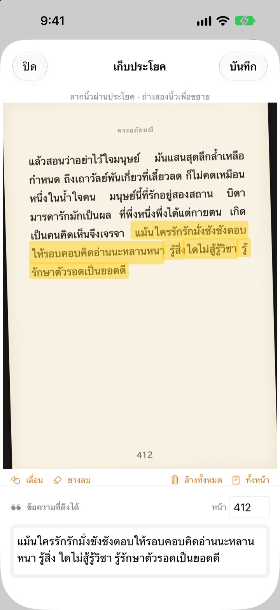
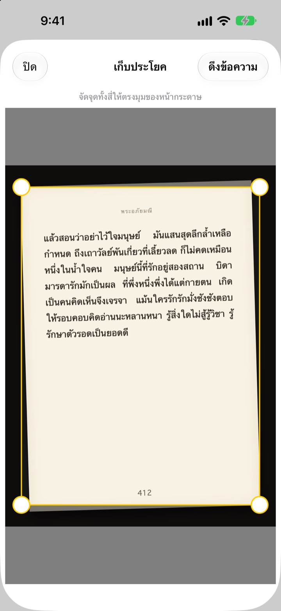
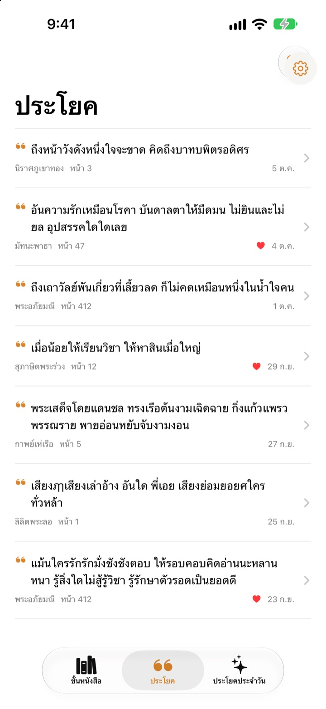
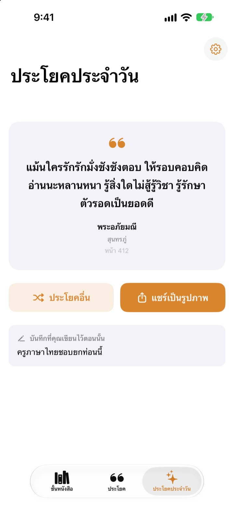

ขีดเส้นใต้หนังสือ
ได้โดยไม่ต้องใช้ปากกา
ถ่ายหน้าหนังสือ ลากนิ้วผ่านประโยคที่ชอบ แล้วจะเก็บไว้เฉพาะประโยคนั้นเป็นข้อความ พร้อมชื่อหนังสือและเลขหน้า
ทุกฟีเจอร์ใช้ฟรี และไม่มีโฆษณา

ลองลากดู
ลากนิ้วหรือเมาส์ผ่านประโยคไหนก็ได้ในหน้าด้านล่าง เฉพาะคำที่ลากผ่านเท่านั้นที่จะไปอยู่บนการ์ด
ประโยคดี ๆ ที่อ่านเจอ หายไปไหนหมด
หนังสือยืมจากห้องสมุดก็ขีดเขียนไม่ได้ ถ่ายรูปหน้าหนังสือไว้ก็จมหายไปในรูปเป็นพัน ๆ รูป พิมพ์ลงแอปโน้ตก็มักไม่ได้จดชื่อหนังสือกับเลขหน้าไว้ Bookmark Shot เก็บประโยค หนังสือ และเลขหน้าไว้ด้วยสองขั้นตอน แค่ถ่าย แล้วลากนิ้ว
ถ่ายเอียงก็ได้หน้าตรง
หลังถ่ายหน้าหนังสือ ปรับมุมทั้งสี่ให้ตรงกับขอบหน้า แม้รูปที่ถ่ายเอียงก็ถูกปรับให้เรียบเหมือนแผ่นกระดาษ ตัวอักษรยิ่งคมชัด ก็ยิ่งอ่านได้แม่นยำ
ใช้รูปที่มีอยู่แล้วในคลังรูปภาพได้ด้วย

ทุกประโยครวมไว้ที่เดียว
หนังสือของคุณเรียงอยู่บนชั้นหนังสือแบบโชว์ปก ส่วนประโยคที่เก็บไว้รวมอยู่ในรายการเดียว ค้นหาได้จากประโยค บันทึก หรือชื่อหนังสือ และกดหัวใจให้ประโยคที่อยากกลับมาอ่านอีก
เพิ่มหนังสือได้ด้วยรูปปกเพียงรูปเดียว แอปจะอ่านชื่อเรื่องและชื่อผู้แต่งให้ และถ้าถ่ายติดบาร์โค้ดที่ปกหลัง ก็ได้ ISBN มาด้วย

เจอประโยคที่เคยลืมไปอีกครั้ง
ประโยคประจำวันจะหยิบประโยคที่คุณเก็บไว้กลับมาให้อ่านวันละหนึ่งประโยค พร้อมบันทึกที่คุณเขียนไว้ตอนนั้น วางวิดเจ็ตไว้บนหน้าจอโฮมหรือหน้าจอล็อกได้
ชอบประโยคไหน เปลี่ยนเป็นการ์ดภาพสไตล์กระดาษแล้วแชร์ได้เลย

เริ่มได้ใน 3 ขั้นตอน
- 1
ถ่ายปก
ชื่อเรื่องและชื่อผู้แต่งกรอกให้อัตโนมัติ แก้ไขได้ก่อนบันทึก
- 2
ถ่ายหน้าหนังสือ
ปรับมุมทั้งสี่ แล้วหน้าจะตรงเอง
- 3
ลากนิ้วผ่านประโยค
แอปหาเลขหน้าให้และบันทึกไปพร้อมกัน
เครื่องมือในหน้าจอไฮไลต์
- ลากนิ้ว
- เลือกเฉพาะคำที่ลากผ่าน
- ถ่างสองนิ้ว
- ซูมเข้าเพื่อลากได้แม่นขึ้น
- เลื่อน
- ลากหน้าที่ซูมอยู่ไปมา
- ยางลบ
- เอาคำที่ลากไว้ออก
- ล้างทั้งหมด
- เอาคำที่เลือกไว้ออกทั้งหมด
- ทั้งหน้า
- เก็บข้อความทั้งหน้า
- ช่องเลขหน้า
- เลขหน้าที่แอปหาเจอ แก้ไขได้
เมื่อใช้ VoiceOver ให้แตะสองครั้งที่บรรทัดเพื่อเพิ่มหรือเอาออก
ทุกฟีเจอร์ใช้ฟรี
ฟรี
- เพิ่มหนังสือจากปก และ ISBN จากบาร์โค้ด
- ปรับหน้าให้ตรงและไฮไลต์ด้วยนิ้ว
- ใส่เลขหน้าให้อัตโนมัติ
- ชั้นหนังสือ ค้นหาประโยค และรายการโปรด
- ประโยคประจำวัน พร้อมวิดเจ็ตหน้าจอโฮมและหน้าจอล็อก
- แชร์เป็นการ์ดภาพ
- ซิงค์ผ่าน iCloud
สนับสนุนนักพัฒนา
- ถ้าอยากสนับสนุน ส่งทิปเล็ก ๆ ได้จากการตั้งค่า
- ทิปไม่ได้ปลดล็อกอะไรเพิ่ม แอปเหมือนเดิมทุกอย่าง
ไม่มีโฆษณา ไม่มีการสมัครสมาชิก
คำถามที่พบบ่อย
รูปหรือประโยคของฉันถูกส่งไปที่ไหนหรือเปล่า
ไม่ การอ่านข้อความทำบนอุปกรณ์ของคุณทั้งหมดด้วย Apple Vision รูปและประโยคจะไม่ถูกส่งไปยังเซิร์ฟเวอร์ และใช้งานแบบออฟไลน์ได้ด้วย ดูรายละเอียดได้ที่นโยบายความเป็นส่วนตัวด้านล่าง
อ่านภาษาอะไรได้บ้าง
การอ่านข้อความทำโดย iOS บนอุปกรณ์ของคุณ อ่านหนังสือภาษาเกาหลี อังกฤษ ญี่ปุ่น จีน รัสเซีย และภาษายุโรปตะวันตกส่วนใหญ่ได้ และใน iOS เวอร์ชันใหม่ ๆ ยังอ่านภาษาไทย เวียดนาม ตุรกี อินโดนีเซีย โปแลนด์ เช็ก ดัตช์ และภาษากลุ่มนอร์ดิกได้ด้วย ส่วนภาษากรีกยังอ่านไม่ได้
จะเลือกเฉพาะประโยคที่ต้องการได้อย่างไร
หลังถ่ายหน้าหนังสือ ให้ลากนิ้วผ่านประโยคเหมือนใช้ปากกาไฮไลต์ แอปจะเลือกเฉพาะคำเหล่านั้น ถ่างสองนิ้วเพื่อซูมให้ลากได้แม่นขึ้น และยังมียางลบ ล้างทั้งหมด และทั้งหน้าให้ใช้ด้วย
ชื่อเรื่องหรือชื่อผู้แต่งอ่านผิด
การอ่านปกจะเดาจากขนาดตัวอักษร จึงอาจผิดได้กับปกที่ตกแต่งเยอะ คุณแก้ชื่อเรื่องและชื่อผู้แต่งได้ก่อนบันทึกหนังสือ
เลขหน้าไม่ถูกต้อง
แอปอ่านเลขหน้าจากตัวเลขที่ขอบรูป แก้ในช่องเลขหน้าได้เลยก่อนบันทึก
ดูประโยคบนหลายอุปกรณ์ได้ไหม
ได้ หากลงชื่อเข้าใช้ iCloud ด้วยบัญชี Apple เดียวกันและเปิด iCloud Drive ไว้ หนังสือและประโยคจะซิงค์ให้อัตโนมัติ
เพิ่มวิดเจ็ตอย่างไร
แตะหน้าจอโฮมค้างไว้ แตะ “แก้ไข” > “เพิ่มวิดเจ็ต” แล้วเลือก Bookmark Shot ส่วนหน้าจอล็อก ให้แตะค้างไว้แล้วแตะ “กำหนดเอง” ประโยคประจำวันจะแสดงอยู่ตรงนั้น
กล้องใช้งานไม่ได้
ตรวจสอบใน การตั้งค่า > Bookmark Shot ว่าอนุญาตให้เข้าถึงกล้องและรูปภาพแล้ว การถ่ายรูปต้องใช้ iPhone เครื่องจริง
ต้องใช้อะไรบ้าง
iPhone ที่ใช้ iOS 17.0 ขึ้นไป
ติดต่อได้อย่างไร
ส่งความคิดเห็นได้จากหน้าการตั้งค่า (รูปเฟือง) ในแอป หรือส่งอีเมลมาตามที่อยู่ด้านล่าง ปกติเราจะตอบกลับภายใน 2–3 วัน
มีคำถามหรือข้อเสนอแนะ เขียนมาได้ที่ leeo@kakao.com